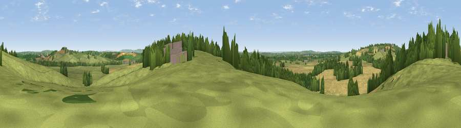

Viewpoint near Chilton
#19439 in England · top 23% of its area beats it · near ChiltonThe view, rendered

A 360° render of this exact spot computed from the terrain model, tree cover and land cover — summer colours, afternoon light, calibrated against photographs of famous viewpoints. Real trees, hedges and buildings will differ in detail.
The panorama
Grey silhouette: terrain skyline in each direction (720 bearings, Earth curvature and refraction included). Dashed green: skyline with trees (+15 m) and buildings (+8 m) as obstacles. Blue strip: how far the ground is visible on each bearing.
Where the view opens
Wedge length = distance to the farthest visible ground on that bearing (vegetation-aware). Rings at 10, 25 and 50 km.
What fills the view
54% grassland · 28% cropland · 16% woodland · 2% built-up
Angular shares of the visible panorama (visual magnitude), not map area. Landscape diversity 0.47 (0–1 Shannon).
Key numbers
More beautiful places nearby
The staircase of upgrades: each row has a higher view potential than everything closer. Driving times are estimates from straight-line distance, calibrated against real road routing — check an actual route before setting out.
| Place | Direction | Drive | Score |
|---|---|---|---|
| Viewpoint near Chilton | NNW · 1 km | ~2 min | 63.8 |
| Viewpoint near Ashendon | NE · 3 km | ~7 min | 65.0 |
| Muswell Hill | NW · 5 km | ~11 min | 67.9 |
| Viewpoint near Chinnor | SE · 14 km | ~26 min | 74.5 |
| Coombe Hill Monument | ESE · 18 km | ~31 min | 75.5 |
| Viewpoint near Woolstone | WSW · 46 km | ~67 min | 76.7 |
| Viewpoint near Meon Vale | NW · 60 km | ~83 min | 77.0 |
| Broadway Hill | WNW · 61 km | ~84 min | 77.7 |
51.80497, -1.01336 · source: screening · position refined by local search. Computed location — check access rights before visiting.